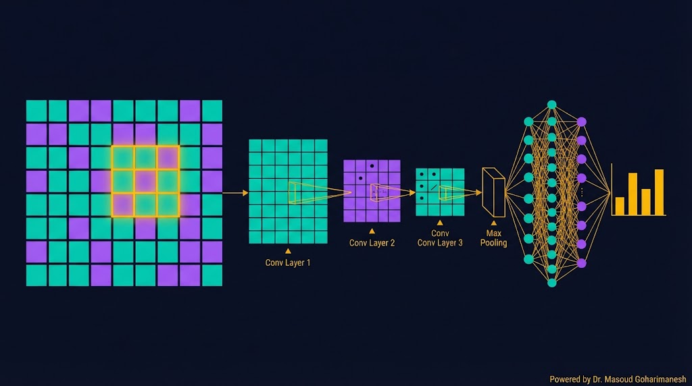
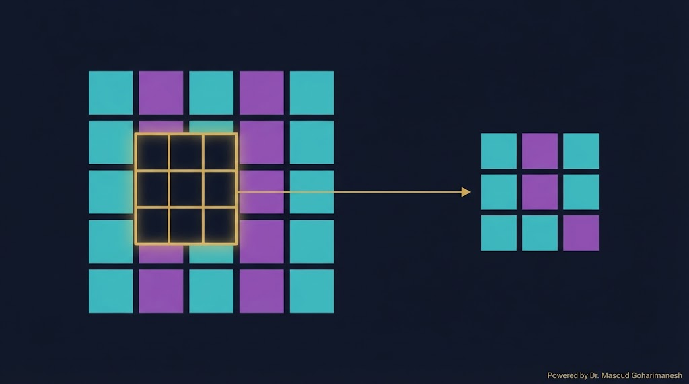
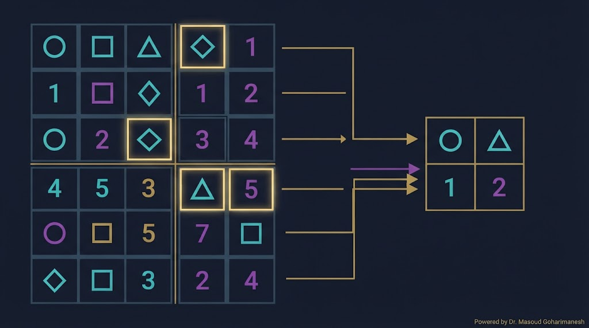
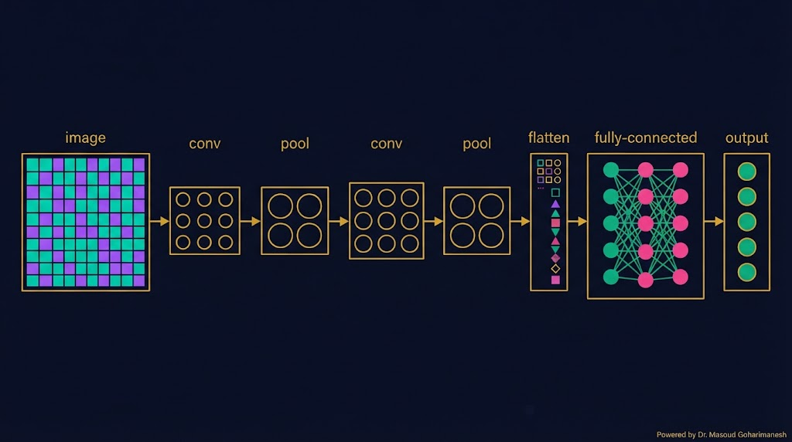
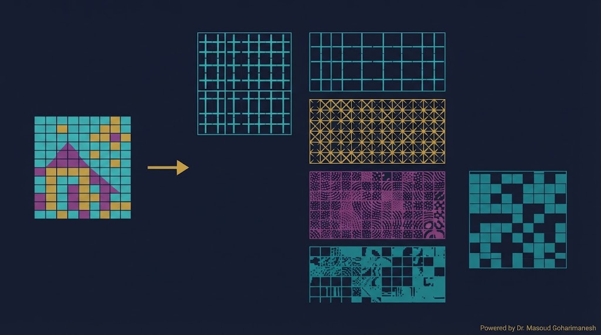
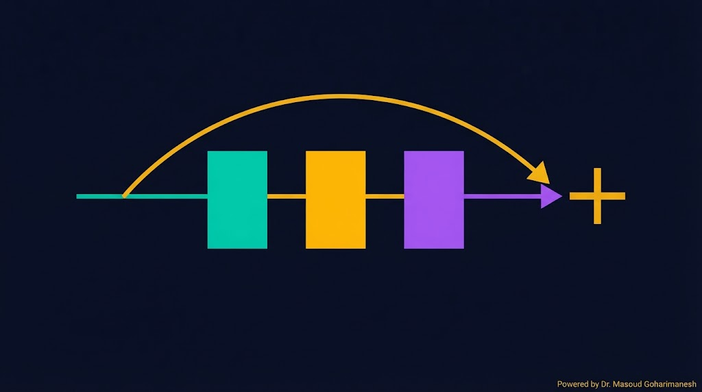
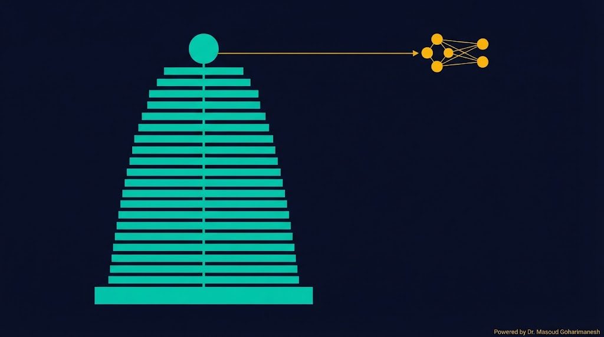
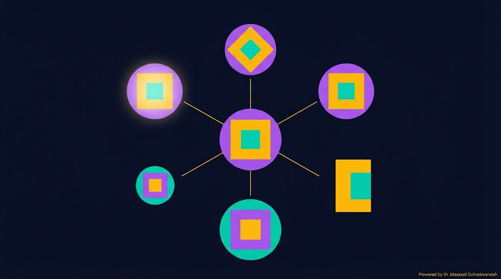
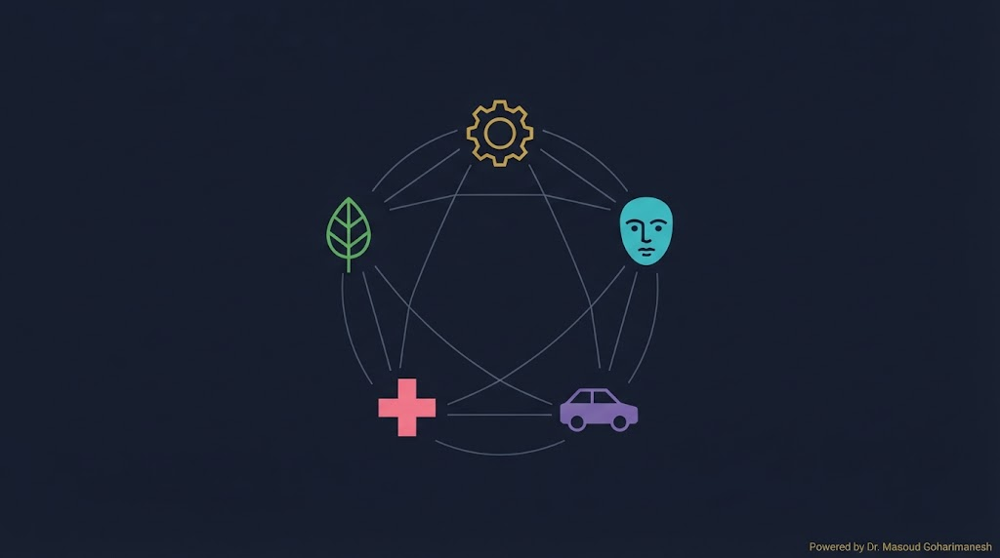

جلسه ۱۰ — CNN
جلسه ۱۰ — CNN
جلسه ۱۰ — CNN
جلسه ۱۰ — CNN
 ستاره این جلسه
به یاد شهدای والامقام
ستاره این جلسه
به یاد شهدای والامقامConvolutional Neural Networks · Computer Vision
From Pixels to Intelligent Perception
Perceptron، MLP، Backpropagation
CNN، Conv، Pooling، ResNet
✅ مشکل MLP با تصاویر
✅ Convolution — ایده اصلی
✅ Pooling — کاهش ابعاد
✅ CNN Architecture
✅ ResNet و Skip Connections
✅ Transfer Learning
در جلسه قبل MLP را دیدیم. اگر بخواهیم یک تصویر ۲۵۶×۲۵۶ را به MLP بدهیم، باید آن را به یک بردار ۶۵۵۳۶ عددی تبدیل کنیم. این یعنی میلیونها پارامتر — عملاً غیرممکن.
CNN (شبکه عصبی کانولوشنی) با ایدهی «فیلتر مشترک» این مشکل را حل میکند: یک فیلتر کوچک روی کل تصویر میلغزد و ویژگیها را استخراج میکند. نتیجه: پارامترهای بسیار کمتر و دقت بسیار بالاتر.
فیلتر مشترک — نه وزن جدا برای هر پیکسل
گربه در هر جای تصویر، گربه است
لبه → بافت → شکل → شیء
از AlexNet تا Stable Diffusion
تصویر ۲۵۶×۲۵۶ با ۳ کانال = ۱۹۶,۶۰۸ ورودی. یک لایه پنهان با ۱۰۰۰ نورون = ۱۹۶ میلیون پارامتر!
وقتی تصویر را به بردار تخت تبدیل میکنیم، همسایگی پیکسلها از بین میرود.
اگر گربه ۱۰ پیکسل جابهجا شود، MLP فکر میکند چیز دیگری است.

یک فیلتر کوچک (معمولاً ۳×۳) روی تصویر میلغزد و در هر موقعیت، حاصلضرب نقطهای فیلتر با پیکسلهای زیرین را محاسبه میکند. نتیجه: Feature Map.

۳×۳ فیلتر = فقط ۹ پارامتر!
هر فیلتر یک الگو (لبه، بافت) را یاد میگیرد
همان فیلتر در همه موقعیتها
موقعیت فیلتر را تغییر دهید و خروجی کانولوشن را ببینید.
بعد از کانولوشن، Feature Map بزرگ است. Pooling آن را کوچک میکند بدون از دست دادن اطلاعات مهم.

بزرگترین — حفظ ویژگیهای قوی
میانگین — نرمتر
کاهش محاسبات + invariance
Pooling را ببینید — از هر ۲×۲، بزرگترین انتخاب میشود.

استخراج ویژگی
کاهش ابعاد
تبدیل به بردار
طبقهبندی نهایی
لایههای اولیه، لبهها را یاد میگیرند. لایههای میانی، بافتها. لایههای عمیق، اشیاء کامل.

لبهها، خطوط
بافت، گوشه
اشیاء، اجزاء
| مدل | سال | ویژگی |
|---|---|---|
| LeNet-5 | ۱۹۹۸ | اولین CNN موفق (دستنویس) |
| AlexNet | ۲۰۱۲ | انقلاب ImageNet — GPU |
| VGG-16 | ۲۰۱۴ | فیلترهای ۳×۳، شبکه عمیق |
| ResNet | ۲۰۱۵ | Skip Connections — ۱۵۲ لایه |
| EfficientNet | ۲۰۱۹ | معماری جستوجو شده |
| ViT | ۲۰۲۰ | Transformer برای تصویر |
وقتی شبکه خیلی عمیق میشود، گرادیان محو میشود. ResNet با اتصال میانبر این مشکل را حل کرد.

یک CNN کوچک را روی دادههای تصویری ساده آموزش دهید.
میتوانید یک شبکه از پیش آموزشدیده (مثلاً ResNet روی ImageNet) را بردارید و فقط لایههای آخر را برای وظیفه خودتان آموزش دهید.

با داده کم، دقت بالا
آموزش سریعتر
GPU کمتر
برای جلوگیری از Overfitting، از هر تصویر چند نسخه تغییر یافته میسازیم.

چرخش
آینه
برش
روشنایی

از تصویر سطح
در قطعات صنعتی
بازرسی جوش
تشخیص اشیاء
% CNN ساده برای تشخیص ارقام layers = [ imageInputLayer([28 28 1]) convolution2dLayer(3, 8, 'Padding', 'same') reluLayer() maxPooling2dLayer(2, 'Stride', 2) convolution2dLayer(3, 16, 'Padding', 'same') reluLayer() maxPooling2dLayer(2, 'Stride', 2) fullyConnectedLayer(10) softmaxLayer() classificationLayer() ]; options = trainingOptions('sgdm', 'MaxEpochs', 10, ... 'MiniBatchSize', 128, 'Plots', 'training-progress'); net = trainNetwork(imdsTrain, layers, options);
import numpy as np from tensorflow.keras import layers, models from tensorflow.keras.datasets import mnist # داده (X_train, y_train), (X_test, y_test) = mnist.load_data() X_train = X_train[..., np.newaxis] / 255.0 X_test = X_test[..., np.newaxis] / 255.0 # CNN model = models.Sequential([ layers.Conv2D(8, (3,3), activation='relu', padding='same', input_shape=(28,28,1)), layers.MaxPooling2D((2,2)), layers.Conv2D(16, (3,3), activation='relu', padding='same'), layers.MaxPooling2D((2,2)), layers.Flatten(), layers.Dense(10, activation='softmax') ]) model.compile(optimizer='adam', loss='sparse_categorical_crossentropy', metrics=['accuracy']) model.fit(X_train, y_train, epochs=5, validation_split=0.1)
[AI] HW10 - نام - شماره دانشجویی به arcslab.uth@gmail.com
برای جستوجوی مقالات و مراجع درباره CNN و بینایی ماشین.
جستوجوی علمی با ذکر منابع
جلسه ۱۰ — اصلیتحلیل کد CNN
پشتیبانکدنویسی Keras
پیشنهادیدر Perplexity جستوجو کنید: «CNN bearing fault diagnosis 2024» و ۳ مقاله معتبر پیدا کنید. منابع را در HW10 بنویسید.
فیلتر لغزان — پارامتر کم، دقت بالا
کاهش ابعاد + invariance
Conv → Pool → Flatten → FC
Skip Connections برای شبکههای عمیق
استفاده از مدل پیشآموزشدیده
Next Session: MediaPipe & Real-time CV
• MediaPipe — کتابخانه گوگل
• Hand Tracking
• Pose Detection
• Face Detection
• Real-time CV در Python و JavaScript